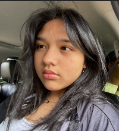

Student | Oldest Sister | Gamer
Hi! I'm Putu Sunari Seriesta Dewi Sukanta — but you can call me Riesta! Born on November 19, 2010 🎂, I’m now 14 and living my best junior high life at Santa Laurensia School 📚.
As the eldest sibling, I’m like the "boss" of the younger crew 🧒👧 — helping out, giving advice, and sometimes just being the cool (or chaotic) sister 😄.
🎧 Things I Love:
- 🎮 Gaming — I really love games like mobile legends and roblox.
- 🎤 Singing — I sing whenever I’m happy, sad, or just in the mood to sing.
- 🛍️ Shopping — I love to walk around to buy clothes or make up.
- 📖 Learning — I enjoy doing practice questions for math.
📺 Favorite Series That Inspire Me:
- 💘 2gether & Still 2gether
- 🏡 Family by Choice
- 🧩 Enigma
- 🗼 Emily in Paris
- ⚔️ The Untamed
- 👨👧 Go Ahead
These shows aren't just fun to watch — they’ve taught me about friendship and identity.
💭 My Dreams:
One day, I hope to:
- 🌈 Get into my dream high school (inside or inside of the country)
- 🎙️ Getting into competitions with singing.
- 🌍 Travel the world.
- 🧠 Keep growing wiser, kinder, and braver every year
🌟 Fun Facts About Me:
- I have four younger siblings!
- I'm from Bali.
- I enjoy reading e books.